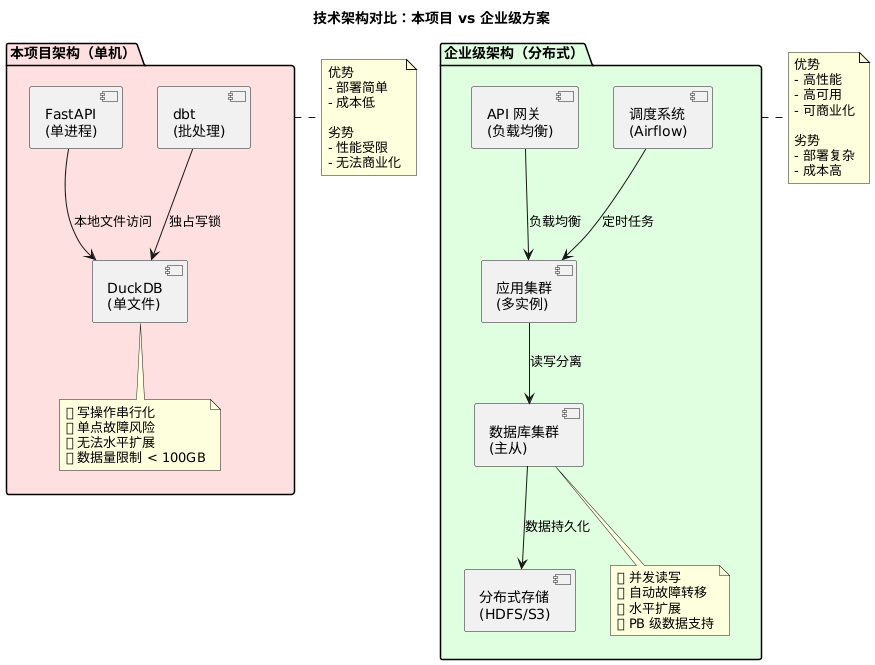
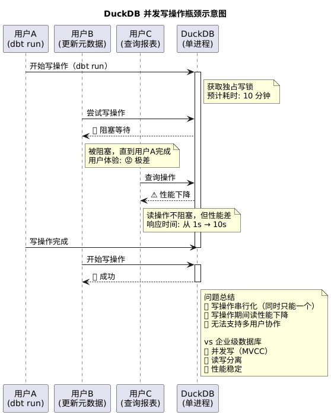
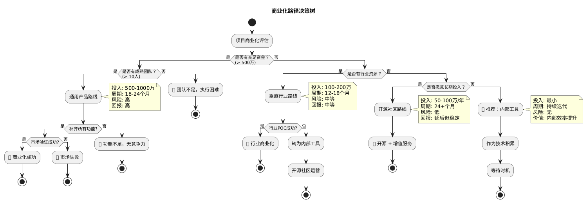
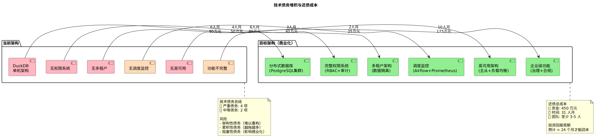
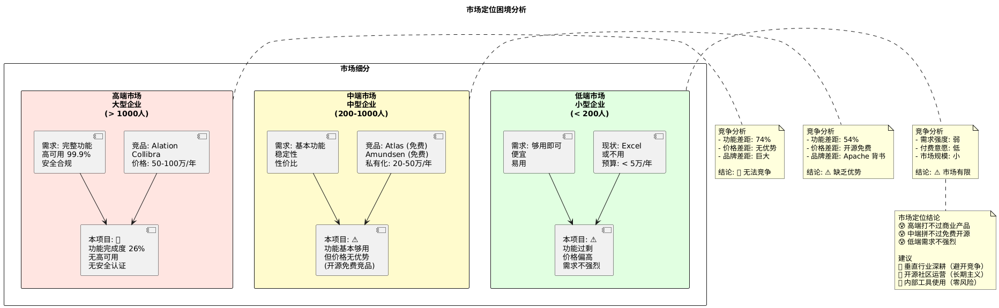
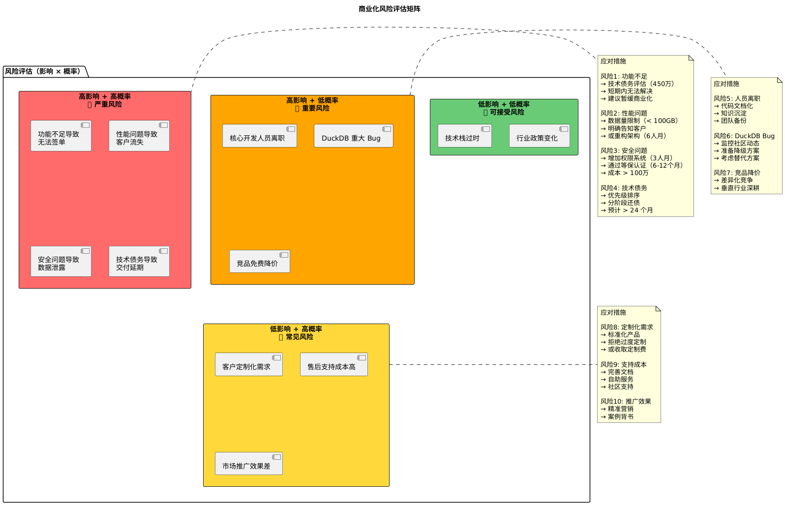
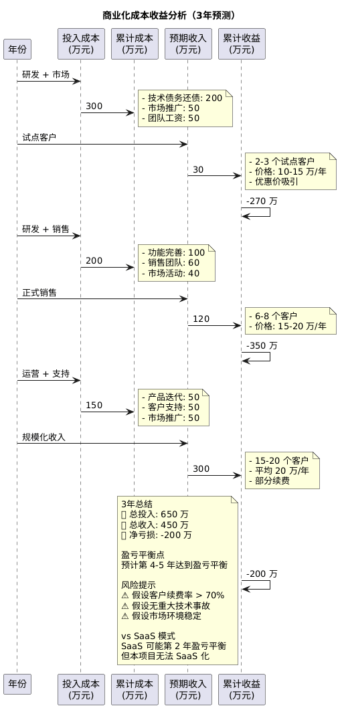
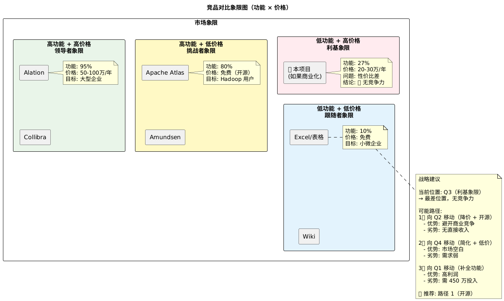

# 项目劣势分析 - PlantUML 可视化图表
# 图表目录
- 技术架构瓶颈对比图
- 功能完整度对比雷达图
- 并发性能瓶颈示意图
- 商业化路径决策树
- 技术债务堆积图
- 市场定位困境图
- 风险评估矩阵图
# 1. 技术架构瓶颈对比图
@startuml 技术架构瓶颈对比

# 2. 功能完整度对比雷达图
@startuml 功能完整度对比

# 3. 并发性能瓶颈示意图
@startuml 并发性能瓶颈

# 4. 商业化路径决策树
@startuml 商业化路径决策

# 5. 技术债务堆积图
@startuml 技术债务堆积

# 6. 市场定位困境图
@startuml 市场定位困境

# 7. 风险评估矩阵图
@startuml 风险评估矩阵

# 8. 补充：成本收益分析图
@startuml 成本收益分析

# 9. 补充：竞品对比象限图
@startuml 竞品对比象限

# 使用说明
# 如何查看这些图表
- 在线查看：
- 访问 PlantText
- 复制对应的 PlantUML 代码
- 粘贴到编辑器中即可渲染
- VS Code 查看：
- 安装插件：PlantUML
- 安装 Java Runtime（PlantUML 依赖）
- 安装 Graphviz（可选，渲染更好）
- 右键 → Preview Current Diagram
- IDEA 查看：
- 安装插件：PlantUML Integration
- 右键 → Show PlantUML Diagram
# 图表说明
| 图表 | 核心观点 | 适用场景 |
|------|---------|---------|
| 架构瓶颈对比 | 单机 vs 分布式差距巨大 | 技术评审 |
| 功能完整度雷达 | 完成度仅 26.8% | 产品规划 |
| 并发性能瓶颈 | DuckDB 写操作互斥 | 性能评估 |
| 商业化决策树 | 提供 4 种路径建议 | 战略决策 |
| 技术债务堆积 | 还债成本 450 万 | 预算规划 |
| 市场定位困境 | 高中低端市场都困难 | 市场分析 |
| 风险评估矩阵 | 识别严重风险 | 风险管理 |
| 成本收益分析 | 3 年亏损 200 万 | 财务预测 |
| 竞品象限图 | 处于最差象限 | 竞争分析 |
文档版本： v1.0
更新日期： 2025-11-24
适用对象： 技术决策者、产品经理、投资人